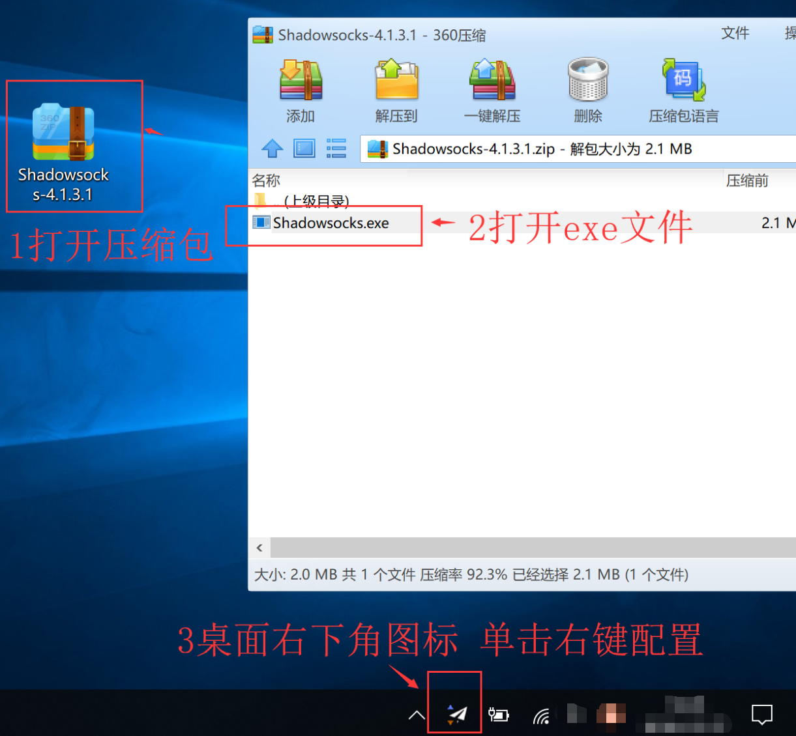
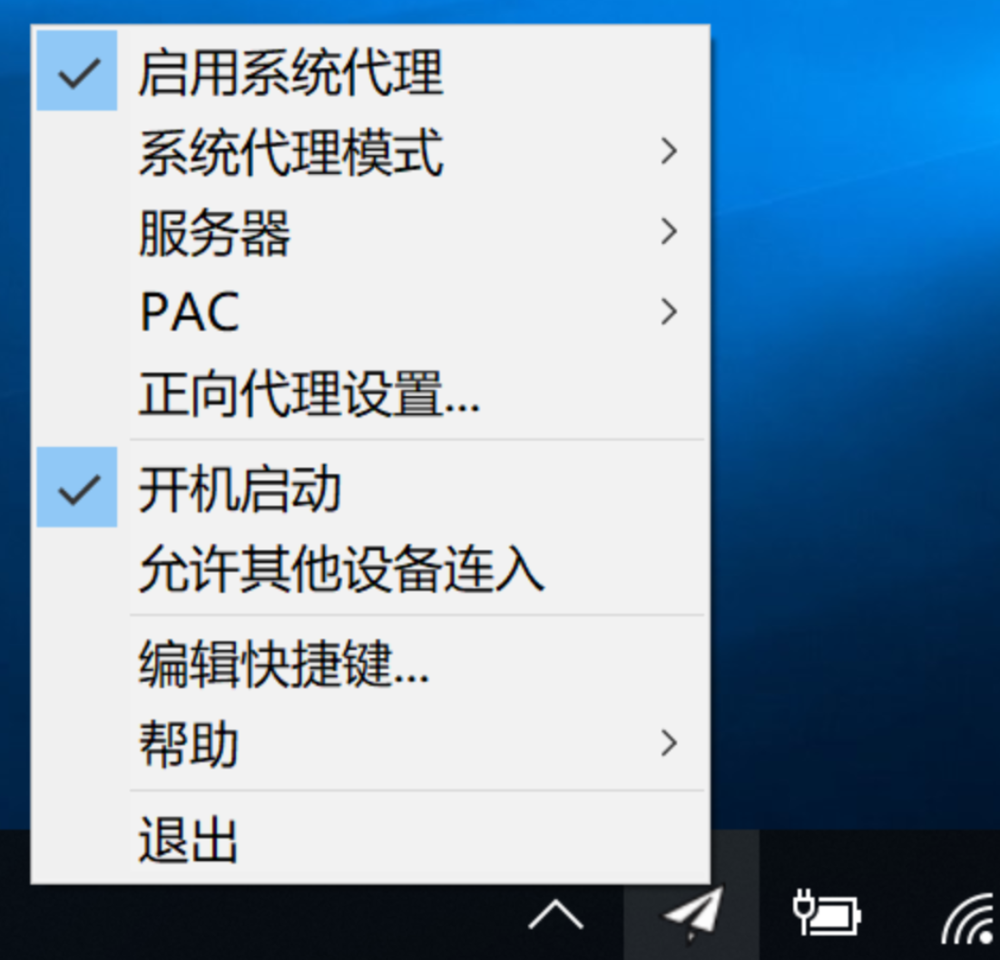
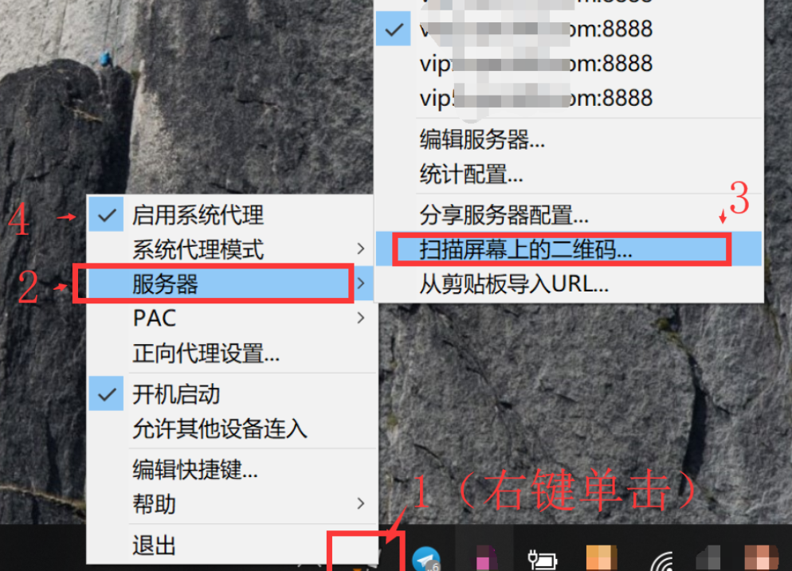

Windows设备SS/ShadowsocksR使用教程
前言：需要安装 .NET Framework 4.6.2 和 Microsoft Visual C++ 2015 Redistributable (x86)（一般电脑已经安装，不需要再次安装）。
第一步，下载用于windows设备的shadowsocks-windows软件
点击此处下载任意一个软件压缩包，下载后解压至任意目录
第二步，打开程序文件Shadowsocks.exe，鼠标右键单击配置节点信息
目前主要有三种配置节点信息的方法，可以根据你的习惯和需要选择

下载后解压文件，打开EXE文件，右键单击左下角的飞机图标进行配置

| 方法/Method | 描述/Description | 前往/Go |
|---|---|---|
| 从剪切板导入URL | 每次复制SS链接，点击从剪切板导入URL即可配置服务器 | Here |
| 扫二维码配置 | 通过扫描屏幕上的二维码，自动配置，推荐 | Here |
| 手动编辑服务器配置 | 添加服务器，并逐一配置相关节点信息 | Here |
方法一，从剪切板导入URL
首先复制SS地址
然后右键单击右下角的软件，点击“服务器”－“从剪切板导入URL”
推荐 方法二，扫二维码配置
首先网页上或者是聊天窗口打开节点的二维码图片
然后右键单击右下角的软件，点击“服务器”－“扫描屏幕上的二维码”
程序自动识别二维码并导入服务器节点信息
最后启用系统代理即可使用

方法三，手动编辑服务器配置
右键单击右下角的软件，点击“服务器”－“编辑服务器”
最后
需要更新PAC：依次操作：PAC ->从GFW List更新PAC （等待更新完毕后）->使用本地PAC->启动系统代理
若提示.NET framework过低，则需要下载.NET framework软件点击下载.NET framework，重新打开运行即可。
完成，可打开游览器访问网站进行测试